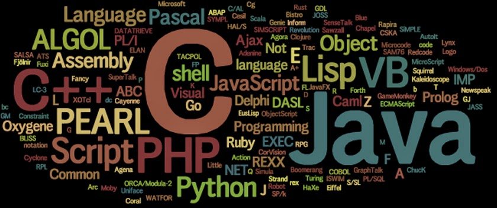
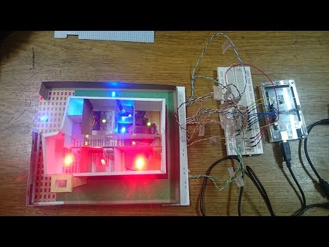

Hola, mi nombre es es Alejandro
Soy un estudiante universitario
apasionado
por la tecnología y la innovación.
Mi objetivo es graduarme y obtener un trabajo en una empresa líder en el campo de la tecnología.
Educación : Actualmente estoy estudiando Ingeniería en Sistemas en la Universidad Privada Domingo Savio.
Mi promedio de calificaciones es de 8.2 y recibi una beca académica por mi desempeño en la escuela
Proyectos y trabajos académicos : He realizado varios proyectos y trabajos académicos relevantes, como
un proyecto de investigación sobre inteligencia artificial y un ensayo sobre la ética en la tecnología. También
desarrolle una aplicación móvil como parte de un proyecto de clase
Contacto : Pueden contactarme a través de mi correo electrónico alevscom2@gmail.com
o mi número de teléfono 68709297
Estoy interesado en el desarrollo de sistemas de ingeniería y tengo habilidades en matemáticas y programación.
Como estudiante de ingeniería en sistemas, debo ser creativo, dinámico y estar dispuesto a asumir el reto de
estudiar la carrera del futuro.
Como estudiante de ingeniería en sistemas, espero tener la oportunidad de desarrollar habilidades en diseño de
software, gerencia de tecnología de la información, desarrollo de videojuegos, ciencia de datos, gestión de
proyectos, consultoría de TI, entre otros

Como estudiante universitario de sistemas, mi día a día se enfoca en el estudio y la práctica de los conceptos
y herramientas necesarias para desarrollar soluciones tecnológicas. A continuación, detallo algunas de mis
experiencias y reflexiones:
Asistencia a clases : Asistir a las clases es fundamental para comprender los temas y aclarar dudas.
Además, los profesores suelen dar pistas sobre los temas que serán evaluados en los exámenes
Trabajo en equipo : En muchas ocasiones, se nos asignan trabajos en equipo para desarrollar proyectos.
Esto nos permite aprender a trabajar en equipo, aportar ideas y solucionar problemas en conjunto
Investigación y lectura :
La tecnología avanza rápidamente, por lo que es importante estar actualizado
en las últimas tendencias y herramientas. La investigación y la lectura de artículos y libros especializados
son una parte importante de mi formación
Prácticas y proyectos :
Unos de los proyectos que me toco hacer como trabajo dentro de la universidad es una maqueta con sensores, decidí construir una pequeña
casa inteligente que pudiera detectar la presencia de
personas y ajustar la iluminación y la temperatura en consecuencia. Para ello, utilicé los siguientes pasos

Diseño: Comencé por diseñar la maqueta en papel, dibujando un plano de la casa y decidiendo dónde colocaría los sensores.
Materiales: Luego, compre los materiales necesarios para construir la maqueta, incluyendo madera, alambre, sensores de movimiento y temperatura,
y una placa de microcontrolador
Construcción: Construí la casa en miniatura utilizando la madera y el alambre, y luego instalé los sensores en los lugares que había elegido
anteriormente
Programación: Programé la placa de microcontrolador para que reciba señales de los sensores y ajuste la iluminación y la temperatura en
consecuenci
Pruebas: Finalmente, realicé pruebas para asegurarme de que los sensores funcionaban correctamente y la casa inteligente respondía
adecuadamente a la presencia de personas
Como estudiante universitario, tengo aspiraciones profesionales que me gustaría lograr en mi carrera.
Por ejemplo
Deseo convertirme en un experto en mi campo: Deseo adquirir un conocimiento profundo y dominio en mi area de estudio. Quiero convertirme en una
autoridad en el tema y estar al tanto de los últimos avances y tendencias en mi campo
Contribuir al avance de la sociedad: Como profesional, aspiro a utilizar mis habilidades y conocimientos para hacer una diferencia positiva en la sociedad.
Quiero trabajar en proyectos y soluciones que tengan un impacto significativo y mejoren la calidad de vida de las personas.
Ser un líder en mi industria: Me gustaría desarrollar habilidades de liderazgo y gestión que me permitan asumir roles de liderazgo en mi industria.
Quiero ser reconocido como un líder en mi campo y tener la capacidad de influir en la toma de decisiones y en la dirección de mi organización
Establecer una red de contactos sólidos: Reconozco la importancia de establecer conexiones y relaciones sólidas en el mundo profesional.
Aspiro a construir una red de contactos que me brinde oportunidades de crecimiento y colaboración, y que me permita aprender de otros profesionales
exitosos en mi campo
Seguir aprendiendo y creciendo: Como profesional, quiero mantenerme actualizado en mi campo y seguir aprendiendo a lo largo de mi carrera.
Aspiro a participar en programas de desarrollo profesional, asistir a conferencias y talleres, y buscar oportunidades de aprendizaje continuo para mejorar
mis habilidades y conocimientos.
Estas son solo algunas de mis aspiraciones como estudiante universitario en mi camino hacia convertirme en un profesional exitoso.
Estoy comprometido a trabajar arduamente, adquirir experiencia y aprovechar todas las oportunidades que se me presentan para alcanzar mis metas
profesionales